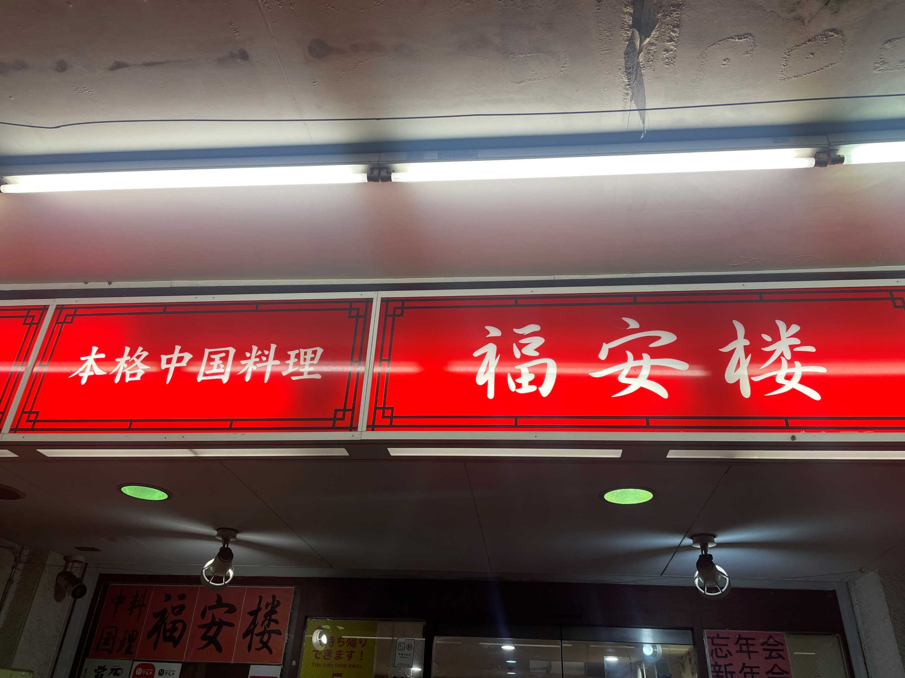

看板、サイン
1枚目:東京ディズニーランドの光る看板
 2021.4.3 撮影者：小野晃幸（自分）
2021.4.3 撮影者：小野晃幸（自分）
これは舞浜駅から東京ディズニーランドに向かう途中にあるドーム型の看板です。夜になると光ります。Tokyo Disneylandの上にシンデレラ城があるのがお気に入りポイントです。
2枚目:スプラッシュマウンテンのポスター
2022.2.17 撮影者：小野晃幸（自分）
これは東京ディズニーランド内にあるポスターで、園内のアトラクション SPLASH MOUNTAIN の宣伝をしています。園内のアトラクションのポスターは他にもありますが、特に少しレトロなタッチのイラストのこのポスターが好きです。
3枚目:行きつけの中華屋の看板
 2023.10.9 撮影者：小野晃幸（自分）
これは私が二週間に一度は訪れる、行きつけの中華屋の看板です。店名の読み方は分かりませんが、雰囲気がよくて通うようになりました。